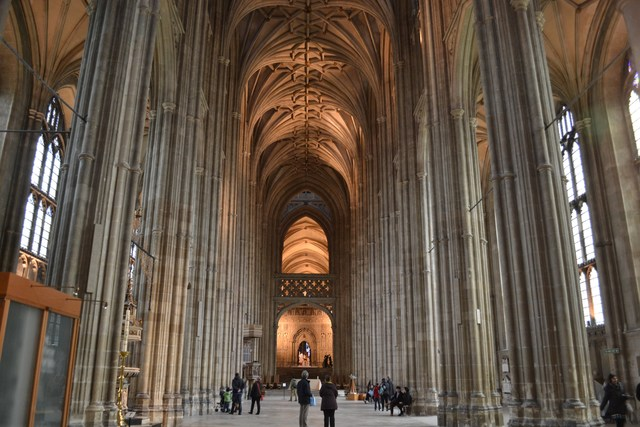

ロンドンから1時間半くらいのところにある大学都市。 ケンブリッジ大学といえば、ジョン・メイナード・ケインズが経済学を学び、貨幣論を研究していたところ・・・ ということで貨幣について考える人間なら一度は訪れてみたかった場所だったのだが、 なにせ観光客が多かった。
5回めくらいのロンドン。 1回めはおもしろくていろいろ歩いたのだけど、 どこにいっても観光地・観光客というか、ベストセラー小説を読んでいるような気分というか、 だんだん見飽きてきて、あまり出歩かなくなってしまった。
コッツウォルズは地域の名前で、そういう名前の街があるわけではない。 古いイングランドの面影を残した田舎街が点在している。 はちみつ色の家々がとても可愛らしい地方だ。
こちらは、Bourton-on-the-Waterという村。 この日は強い雨だったが、石造りの街並みには雨が似合うと思う。
イギリス国教会の総本山であるカンタベリー大聖堂。世界遺産に登録されている。

ご覧のように、カンタベリー大聖堂の1階部分は壮大なゴシック建築なのだが、 地下部分には、ロマネスク時代に建築された地下礼拝堂がある。 この地下礼拝堂が素晴らしかったのが撮影禁止だった。 それと大聖堂の裏側に、すでに廃墟となり朽ち果てた教会建築の一部が残されていて、時間の重みを感じる場所だった。
ライの街並みは、イギリス中世の面影をよく残していて、 そのアンティークな造りの家々や路地は絵本の世界に迷い込んだよう。
街の周りには牧草地が広がっていて、羊が放牧されている。 白くぽつぽつ見えるのが羊さんたち。
遠かったが、会いに行ってきた。かわいいじゃないか。
むかしエンジニアリングチームのオフィスがビクトリア駅の近くにあった頃、よくこのパン屋を訪れた。 Poilane（ポワラーヌ）、パリに本店があるライ麦の田舎パンの名店だ。 伝統的などっしりした頑固なライ麦のカンパーニュ。 こんなライ麦パンを一度自分でも焼いてみたいものだ。
まぁロンドンは観光地の詰め合わせみたいな都市だ。世界遺産もたくさんある。
ビッグベン。
ロンドン塔。
ベイカー・ストリート。 コナンの「ベイカー街の亡霊」のおかげで根拠のない憧れを持っていたのだが、 行ってみると、シャーロック・ホームズ博物館がある以外、ただの通りだった。 がっかり名所に分類してもいいと思う。
グリニッジ。
グリニッジ天文台の子午線。 実はこれは現在の子午線ではない。 測定技術の進歩で子午線がずれて、現在の子午線はグリニッジ天文台から100mほどずれたところにある。